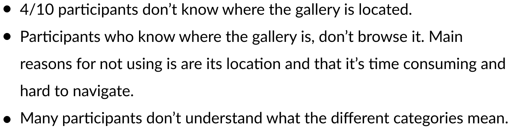
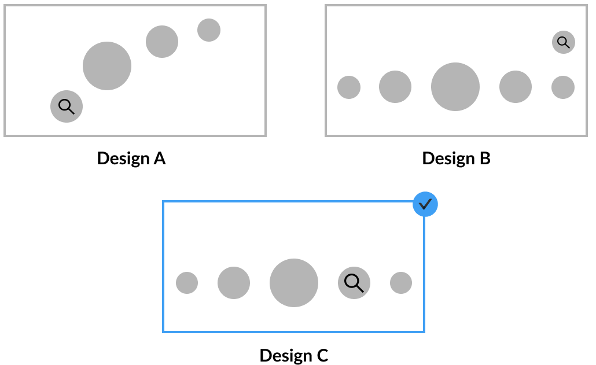

Overview
Being the Instagram lover that I am, I spend a lot of time on the app. While trying to implement effects to my stories, I realized some areas of UX that could be improved to enhance the user experience so decided to dive in and improve its functionality and intuitiveness.
Scope
Brainstorming & Wireframing, User Research, UI/UX Design, Prototyping
Duration
2 Weeks
What is Instagram Effects?
One of the most exciting features that were released on the platform was the effects and effect gallery. A quick disclaimer, effects are not the same as filters. Effects are implemented before a story was taken. One of the most popular effects is the "What Disney Character Are You?" random generator. Filters are applied after a story was taken. For example, different color filters like "Melbourne" and "Tokyo". Stories posted with effects are different from everyone elses, they add character and uniqueness and really shows off the users' personalities. Effects are mostly created by other users with a software, the rest are created by Instagram itself.
The Problem
Here is what the current story page looks like. (The position of "Normal", "Create", "Boomerang" varies by versions) The effect gallery is positioned on the rightmost side. Users have to scroll through around 15 trending effects suggested by Instagram itself to eventually get to the gallery.

This is the current gallery design. Users are only able to see 4 effects at once. It becomes very tiresome to have to move our thumbs a lot to go through the effects. When you go into a effects, you can see it live and on the bottom, users are able to try it, save it, and send it.


User Research + Key Findings
After receiving responses from my survey and conducting in-person observations on 10 participants for my user research, I organized the data and concluded some key findings and pain points.
The reason that Instagram chose to locate where the gallery is located is because they want the primary way of users discovering effects to be from their friends and followings. This actually contradicts with what the user actually wants. From my research I deduced that even though users do find effects from their friends' stories, they actually want to find effects from the gallery on their own.
User Personas

Design Goals
How might we improve the effect gallery's function and process?
This includes reducing the effort needed to access the gallery and make the browsing of effects more user-friendly.
Redesign
Problem 1: Low discoverability of effects gallery
Where the effect gallery is currently located has low discoverability. It's hard to get to and some users don't even know a library exists.
Solution

I decided that Design C is the best solution. It relocates the effect gallery next to home and it doesn't make unnecessary changes, so the users won't be confused and solves the problem of easy access and higher discoverability. Design A only displays 4 buttons and "looks like" it takes up more screen space.Design B wouldn't work because it clashes with the "cross" that comes up when users are scrolling through different effects. Also, when an effect has multiple versions, they come up there.
Problem 2: Poor system and user intuitiveness for browsing effects
The current gallery displays 4 effects in one screenview and users have to go into the effect to save the effect.

Solution
I chose design B over design A because it has 2 columns instead of 3. It displays the thumbnails with a shorter height, but still enough for the users to view each effects properly. This reduces the amount of actions needed by the users. The use of 3 columns in design A are too clusted for the screen. Although displays more effects in one viewing, makes it harder to properly view each effect's thumbnail.
A save button is added to the bottom right on each thumbnail for users to save them faster.
Renamed categories because the current names are quite unclear and vague. Users are often confused as to what each category name means.